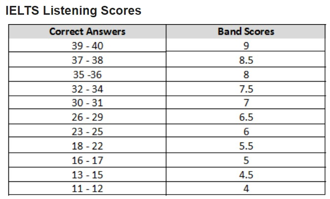

JPG material
Listening Bands
An archived IELTS listening raw-score conversion chart; band-score boundaries can vary between test versions.

JPG material
An archived IELTS listening raw-score conversion chart; band-score boundaries can vary between test versions.
